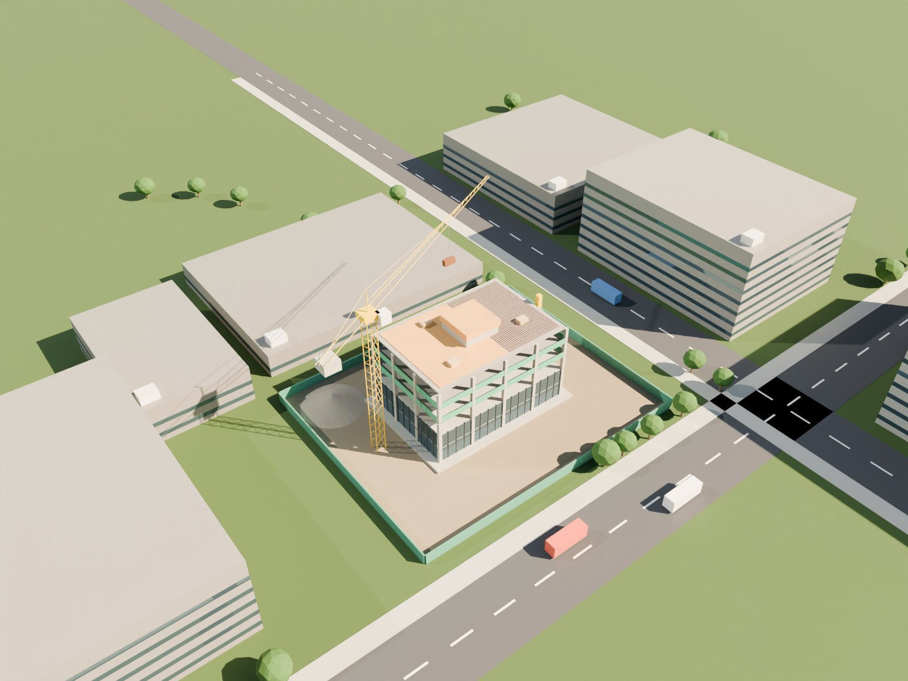

Every week of the build, on one map.
Fly the same route every week. The colour map and stereo surface show what was built, what moved and how much material is left, for owners, lenders and site teams.
Watch it fly.
MS maps the site on the same route as every week. This week's map is laid over week 3, and every change is pinned.

Nine floors, measured.
Slide between the two dates: the frame went from five floors to fourteen, glazing reached level 8, the crane climbed and the stockpile shrank. Every change is measured from the same drone position.
Where it sees.
Colour from MS for the map, and Duos visible and near infrared for depth. Construction stays in the visible.
How it works.
The same flight every week becomes a record of the build.
The same route and height every week, so maps line up.
A colour orthomosaic and a stereo surface for every flight.
Dates side by side, with areas and volumes measured.
A progress report for owners, lenders and the site team.